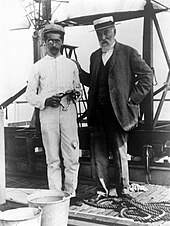

The University of Pittsburgh's faculty has stayed dedicated to a brighter future.
Documenting Discoveries
The Pitt Faculty digital collection pays recognition to the esteemed faculty members that have had a great impact on not only the campus, but also all around the globe. The findings in this documentation have records of trials, experiments and conversations that have helped deepen our understanding of our world and its complications. Having this archive allows evidence to be stored of the faculty’s dedicated efforts towards a brighter future. This Pitt archive documents the celebrated faculty at the University of Pittsburgh. Particularly, this archive highlights the determination of these faculty members, and their intellectual contributions to their fields. This digital collection contains documentation from 1892-1998. This collection contains a wide variety of media, such as visual representations or data and printed texts like research findings or personal information providing insight to these faculty members.
Scientific Significance
This archive consists of faculty members that have left significant contributions that have impacted not only the Pitt community, but also the global community. It serves as a tribute to those who had left a lasting mark in their fields and on the world around them. The inclusion of records including photographs, newspaper articles, biographies, and a series of radio lectures, comes from a variety of researchers and departments at the University of Pittsburgh which help to capture key events and detailed information of their discoveries. These archives are able to provide insight to the legacy left behind by the university’s astute staff. In 1932, the chemical structure of vitamin C was able to be identified by Charles Glen King and his team. This allowed it to become more incorporated in people’s diets and therefore led to health improvements. And, in 1964, insulin was synthesized for the first time by Panayotis Katsoyanni, to help reduce blood sugar levels. Having a designated collection to these preserved thoughts acts as an excellent source for future generations to reflect on and appreciate.

Breaking Ground and Paving Ways
This archive’s contents are important because it pays tribute to the advancements found at one time, while being able to find different and other advancements in the current day. The information that is presented in this archive is able to bring recognition to the great discoveries that have happened through the Pittsburgh Institution. The information that can be found in this archive would benefit or be beneficial to those in a variety of fields, but, more specifically, science fields. There is impactful work included, such as the invention of the polio vaccine in Oakland by Jonas Salk or conducted research by astronomers Samuel Pierpont Langley and John Brashear. This documentation keeps record of the accomplishments and progress that Pitt faculty has contributed to the world. The Polio vaccine was later created by a Pitt professor, John Salk in 1955, which heavily decreased the number of cases two years after its mass development. It is important to pay recognition to these distinguished faculty members that played a vital role in the progression of any field that makes the modern day easier to live through. The information contained in this archive would most likely be accessed by those interested in these certain fields that wish to gain more insight on the impact that Pitt had on their knowledge.
John Salk in the laboratory where he conducted research for the Polio vaccine.
Hail to History
I believe that this archive is able to both challenge and connect with existing knowledge. This archive documents old advancements that helped move along the progression of society as a whole. Each faculty member mentioned had a great impact on the history of our improving future. Now that we live in a day and age with greater technology and experimental resources, we would be able to run trials and compare current data to that which can be found in this archive. Reading through the Pitt Faculty archive allows student readers to feel a deeper sense of pride for belonging to a school that has fostered so many great minds ahead of theirs. Access to this archive allows others to explore the lasting historical contributions that have been left behind on society by the brilliant minds at the University of Pittsburgh. In the views of Foucault, I believe that this archive confirms a certain history, but doesn’t necessarily need to fit within the traditional chronological framework. It is important to recognize that the majority of this information is in a chronological order due to the progression of discoveries. A forced sense of continuity is going to be created due to this archive entailing organized names and dates. However, at the same time, I felt that this archive article was able to be experienced as absorbing the information given and being able to pull out themes, such that “Pitt has produced many great minds that have led to a better today,” or being able to recall significant events, without necessarily needing to engage with the work as a whole to understand its overall purpose. This archive provides fundamental information that can continue to be reflected on and appreciated while being challenged with current studies being done.